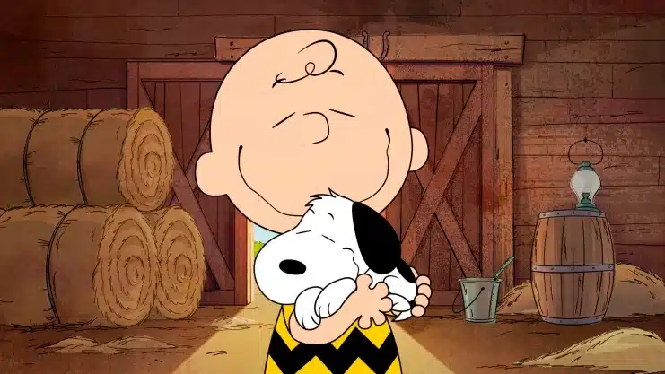

Pagina dedicada

Esta pagina esta creada con el proposito de realizar la practica No.3 de submodulo,
pero esta dedicada a Abril Borbon porque le gusta el personaje, es por eso
que decidi hacer la pagina con esta tematica, gracias.
-Fer